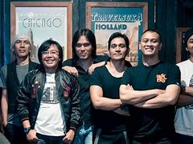

Profile Dewa 19
Dewa menyelesaikan pembuatan master album perdana mereka di Jakarta. Setelah itu, Andra, Ari, Erwin, dan Wawan kembali ke Surabaya sementara Dhani tetap di Jakarta untuk mencari label rekaman yang bersedia mengorbitkan mereka. Dhani kemudian berkeliaran di penjuru kota Jakarta, dari satu perusahaan rekaman ke perusahaan rekaman lain menggunakan bus kota
-
.jpeg)
Single Pertama Dewa19
Lagu Juliette dirilis pada (31/3) dan menjadi single pertama DEWA 19 usai vakum 12 tahun terakhir.
-

penghargaan
Sepanjang perjalanan kariernya, Dewa 19 telah menerima banyak penghargaan. Grup ini telah tercatat beberapa kali memperoleh penghargaan BASF Awards maupun AMI Awards. Dewa 19 juga menerima sejumlah penghargaan dari luar negeri, di antaranya 2 kali memenangkan Anugerah Planet Muzik, LibForAll Award dari LibForAll Foundation, Amerika Serikat serta penghargaan Moonman Award dari MTV Southeast Asia Viewer's Choice.[27][53][49] Pada tahun 2008, majalah Rolling Stone memasukkan Dewa 19 ke dalam "The Immortals: 25 Artis Indonesia Terbesar Sepanjang Masa". Ahmad Dhani juga menjadi salah satu artis dalam daftar tersebut. Sementara itu, Andra Ramadhan berada dalam daftar 50 Gitaris Indonesia Terbaik Sepanjang Masa", sedangkan Ari Lasso dan Once Mekel masuk ke dalam 50 Penyanyi Indonesia Terbaik Sepanjang Masa